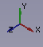

|
| Beschreibung |
|---|
| This macro rotates the current view by 90° to the left. Only works if you are in Top view |
| Autor |
| Yorik |
| Link |
| Liste von Macros How to install macros How to customize toolbars |
| Version |
| 01.00 |
| Datum zuletzt geändert |
| 2010-11-17 |
Description
This macro rotates the current view by 90° to the left. Only works if you are in Top view 
import math from pivy import coin cam = Gui.ActiveDocument.ActiveView.getCameraNode() rot = coin.SbRotation() rot.setValue(coin.SbVec3f(0,0,1),math.pi/2) nrot = cam.orientation.getValue() * rot cam.orientation = nrot
Description
This code for :
- axonometric view with Y pointing upwards  mode 1
- axonometric view with Z pointing upwards
 mode 2
mode 2

{kind=link}
For FreeCAD Version 0.16
import math
import pivy
from pivy import coin
Gui.activeDocument().activeView().viewAxonometric()
Gui.SendMsgToActiveView("ViewFit")
cam = Gui.ActiveDocument.ActiveView.getCameraNode()
rot = coin.SbRotation()
rot.setValue(coin.SbVec3f(1,0,0),-math.pi/2) # Y pointing upwards (mode 1)
#rot.setValue(coin.SbVec3f(0,0,1),math.pi/2) # Z pointing upwards (mode 2 uncomment for use)
nrot = cam.orientation.getValue() * rot
cam.orientation = nrot
Gui.SendMsgToActiveView("ViewFit")
Description
This def paste in the Python console FreeCAD (or your macro) allows you to rotate the view in 3-axis and the angle (in degrees) give interesting to create a plan to a desired position
Use
Paste the code in the Python console FreeCAD and type Enter > Enter
Script
def RotateView(axisX=1.0,axisY=0.0,axisZ=0.0,angle=45.0):
import math
from pivy import coin
try:
cam = Gui.ActiveDocument.ActiveView.getCameraNode()
rot = coin.SbRotation()
rot.setValue(coin.SbVec3f(axisX,axisY,axisZ),math.radians(angle))
nrot = cam.orientation.getValue() * rot
cam.orientation = nrot
print axisX," ",axisY," ",axisZ," ",angle
except Exception:
print "Not ActiveView "
tip in the console ex :
RotateView(0,1,0,45)
If there is no open document an error is returned